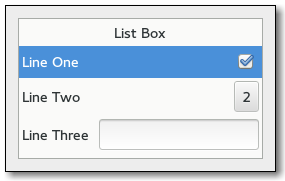

Gtk.ListBox¶
Example¶
Methods¶
| Inherited: | Gtk.Container (27), Gtk.Widget (254), GObject.Object (33), Gtk.Buildable (10) |
|---|
| static | new() |
| drag_highlight_row(row) | |
| drag_unhighlight_row() | |
| get_activate_on_single_click() | |
| get_adjustment() | |
| get_row_at_index(index_) | |
| get_row_at_y(y) | |
| get_selected_row() | |
| get_selection_mode() | |
| insert(child, position) | |
| invalidate_filter() | |
| invalidate_headers() | |
| invalidate_sort() | |
| prepend(child) | |
| select_row(row) | |
| set_activate_on_single_click(single) | |
| set_adjustment(adjustment) | |
| set_filter_func(filter_func, *user_data) | |
| set_header_func(update_header, *user_data) | |
| set_placeholder(placeholder) | |
| set_selection_mode(mode) | |
| set_sort_func(sort_func, *user_data) |
Virtual Methods¶
| Inherited: | Gtk.Container (10), Gtk.Widget (82), GObject.Object (7), Gtk.Buildable (10) |
|---|
| do_activate_cursor_row() | |
| do_move_cursor(step, count) | |
| do_row_activated(row) | |
| do_row_selected(row) | |
| do_toggle_cursor_row() |
Properties¶
| Inherited: | Gtk.Container (3), Gtk.Widget (38) |
|---|
| Name | Type | Flags | Short Description |
|---|---|---|---|
| activate-on-single-click | bool | r/w | Activate row on a single click |
| selection-mode | Gtk.SelectionMode | r/w | The selection mode |
Signals¶
| Inherited: | Gtk.Container (4), Gtk.Widget (69), GObject.Object (1) |
|---|
| Name | Short Description |
|---|---|
| activate-cursor-row | |
| move-cursor | |
| row-activated | The ::row-activated signal is emitted when a row has been activated by the user. |
| row-selected | The ::row-selected signal is emitted when a new row is selected, or (with a None row ) when the selection is cleared. |
| toggle-cursor-row |
Fields¶
| Inherited: | Gtk.Container (1), Gtk.Widget (1), GObject.InitiallyUnowned (3), GObject.Object (3) |
|---|
| Name | Type | Access | Description |
|---|---|---|---|
| parent_instance | Gtk.Container | r |
Class Details¶
- class Gtk.ListBox(**kwargs)¶
Bases: Gtk.Container
A Gtk.ListBox is a vertical container that contains Gtk.ListBoxRow children. These rows can by dynamically sorted and filtered, and headers can be added dynamically depending on the row content. It also allows keyboard and mouse navigation and selection like a typical list.
Using Gtk.ListBox is often an alternative to Gtk.TreeView, especially when the list contents has a more complicated layout than what is allowed by a Gtk.CellRenderer, or when the contents is interactive (i.e. has a button in it).
Although a Gtk.ListBox must have only Gtk.ListBoxRow children you can add any kind of widget to it via Gtk.Container.add (), and a Gtk.ListBoxRow widget will automatically be inserted between the list and the widget.
The Gtk.ListBox widget was added in GTK+ 3.10.
- do_activate_cursor_row()¶
Type: virtual
- do_move_cursor(step, count)¶
Type: virtual
Parameters: - step (Gtk.MovementStep) –
- count (int) –
- do_row_activated(row)¶
Type: virtual Parameters: row (Gtk.ListBoxRow) –
- do_row_selected(row)¶
Type: virtual Parameters: row (Gtk.ListBoxRow) –
- do_toggle_cursor_row()¶
Type: virtual
- static new()¶
Returns: a new Gtk.ListBox Return type: Gtk.Widget Creates a new Gtk.ListBox container.
New in version 3.10.
- drag_highlight_row(row)¶
Parameters: row (Gtk.ListBoxRow) – a Gtk.ListBoxRow This is a helper function for implementing DnD onto a Gtk.ListBox. The passed in row will be highlighted via Gtk.Widget.drag_highlight (), and any previously highlighted row will be unhighlighted.
The row will also be unhighlighted when the widget gets a drag leave event.
New in version 3.10.
- drag_unhighlight_row()¶
If a row has previously been highlighted via Gtk.ListBox.drag_highlight_row () it will have the highlight removed.
New in version 3.10.
- get_activate_on_single_click()¶
Returns: True if rows are activated on single click, False otherwise Return type: bool Returns whether rows activate on single clicks.
New in version 3.10.
- get_adjustment()¶
Returns: the adjustment Return type: Gtk.Adjustment Gets the adjustment (if any) that the widget uses to for vertical scrolling.
New in version 3.10.
- get_row_at_index(index_)¶
Parameters: index_ (int) – the index of the row Returns: the child Gtk.Widget or None Return type: Gtk.ListBoxRow Gets the n :th child in the list (not counting headers). If _index is negative or larger than the number of items in the list, None is returned.
New in version 3.10.
- get_row_at_y(y)¶
Parameters: y (int) – position Returns: the row Return type: Gtk.ListBoxRow Gets the row at the y position.
New in version 3.10.
- get_selected_row()¶
Returns: the selected Gtk.Widget Return type: Gtk.ListBoxRow Gets the selected row.
New in version 3.10.
- get_selection_mode()¶
Returns: a Gtk.SelectionMode Return type: Gtk.SelectionMode Gets the selection mode of the listbox.
New in version 3.10.
- insert(child, position)¶
Parameters: - child (Gtk.Widget) – the Gtk.Widget to add
- position (int) – the position to insert child in
Insert the child into the list_box at position. If a sort function is set, the widget will actually be inserted at the calculated position and this function has the same effect of Gtk.Container.add ().
If position is -1, or larger than the total number of items in the list_box, then the child will be appended to the end.
New in version 3.10.
- invalidate_filter()¶
Update the filtering for all rows. Call this when result of the filter function on the list_box is changed due to an external factor. For instance, this would be used if the filter function just looked for a specific search string and the entry with the search string has changed.
New in version 3.10.
- invalidate_headers()¶
Update the separators for all rows. Call this when result of the header function on the list_box is changed due to an external factor.
New in version 3.10.
- invalidate_sort()¶
Update the sorting for all rows. Call this when result of the sort function on the list_box is changed due to an external factor.
New in version 3.10.
- prepend(child)¶
Parameters: child (Gtk.Widget) – the Gtk.Widget to add Prepend a widget to the list. If a sort function is set, the widget will actually be inserted at the calculated position and this function has the same effect of Gtk.Container.add ().
New in version 3.10.
- select_row(row)¶
Parameters: row (Gtk.ListBoxRow or None) – The row to select or None Make row the currently selected row.
New in version 3.10.
- set_activate_on_single_click(single)¶
Parameters: single (bool) – a boolean If single is True, rows will be activated when you click on them, otherwise you need to double-click.
New in version 3.10.
- set_adjustment(adjustment)¶
Parameters: adjustment (Gtk.Adjustment or None) – the adjustment, or None Sets the adjustment (if any) that the widget uses to for vertical scrolling. For instance, this is used to get the page size for PageUp/Down key handling.
In the normal case when the list_box is packed inside a Gtk.ScrolledWindow the adjustment from that will be picked up automatically, so there is no need to manually do that.
New in version 3.10.
- set_filter_func(filter_func, *user_data)¶
Parameters: - filter_func (Gtk.ListBoxFilterFunc or None) – callback that lets you filter which rows to show
- user_data (object) – user data passed to filter_func
By setting a filter function on the list_box one can decide dynamically which of the rows to show. For instance, to implement a search function on a list that filters the original list to only show the matching rows.
The filter_func will be called for each row after the call, and it will continue to be called each time a row changes (via Gtk.ListBoxRow.changed ()) or when Gtk.ListBox.invalidate_filter () is called.
New in version 3.10.
- set_header_func(update_header, *user_data)¶
Parameters: - update_header (Gtk.ListBoxUpdateHeaderFunc or None) – callback that lets you add row headers
- user_data (object) – user data passed to update_header
By setting a header function on the list_box one can dynamically add headers in front of rows, depending on the contents of the row and its position in the list. For instance, one could use it to add headers in front of the first item of a new kind, in a list sorted by the kind.
The update_header can look at the current header widget using Gtk.ListBoxRow.get_header () and either update the state of the widget as needed, or set a new one using Gtk.ListBoxRow.set_header (). If no header is needed, set the header to None.
Note that you may get many calls update_header to this for a particular row when e.g. changing things that don’t affect the header. In this case it is important for performance to not blindly replace an exisiting header widh an identical one.
The update_header function will be called for each row after the call, and it will continue to be called each time a row changes (via Gtk.ListBoxRow.changed ()) and when the row before changes (either by Gtk.ListBoxRow.changed () on the previous row, or when the previous row becomes a different row). It is also called for all rows when Gtk.ListBox.invalidate_headers () is called.
New in version 3.10.
- set_placeholder(placeholder)¶
Parameters: placeholder (Gtk.Widget or None) – a Gtk.Widget or None Sets the placeholder widget that is shown in the list when it doesn’t display any visible children.
New in version 3.10.
- set_selection_mode(mode)¶
Parameters: mode (Gtk.SelectionMode) – The Gtk.SelectionMode Sets how selection works in the listbox. See Gtk.SelectionMode for details.
Note: Gtk.ListBox does not support Gtk.SelectionMode.MULTIPLE.
New in version 3.10.
- set_sort_func(sort_func, *user_data)¶
Parameters: - sort_func (Gtk.ListBoxSortFunc or None) – the sort function
- user_data (object) – user data passed to sort_func
By setting a sort function on the list_box one can dynamically reorder the rows of the list, based on the contents of the rows.
The sort_func will be called for each row after the call, and will continue to be called each time a row changes (via Gtk.ListBoxRow.changed ()) and when Gtk.ListBox.invalidate_sort () is called.
New in version 3.10.
Signal Details¶
- Gtk.ListBox.signals.move_cursor(object, p0)¶
Signal Name: move-cursor
Flags: Parameters: - object (Gtk.MovementStep) –
- p0 (int) –
- Gtk.ListBox.signals.row_activated(row)¶
Signal Name: row-activated Flags: RUN_LAST Parameters: row (Gtk.ListBoxRow) – the activated row The ::row-activated signal is emitted when a row has been activated by the user.
New in version 3.10.
- Gtk.ListBox.signals.row_selected(row)¶
Signal Name: row-selected Flags: RUN_LAST Parameters: row (Gtk.ListBoxRow) – the selected row The ::row-selected signal is emitted when a new row is selected, or (with a None row ) when the selection is cleared.
New in version 3.10.
Property Details¶
- Gtk.ListBox.props.activate_on_single_click¶
Name: activate-on-single-click Type: bool Default Value: True Flags: r/w Activate row on a single click
- Gtk.ListBox.props.selection_mode¶
Name: selection-mode Type: Gtk.SelectionMode Default Value: Gtk.SelectionMode.SINGLE Flags: r/w The selection mode